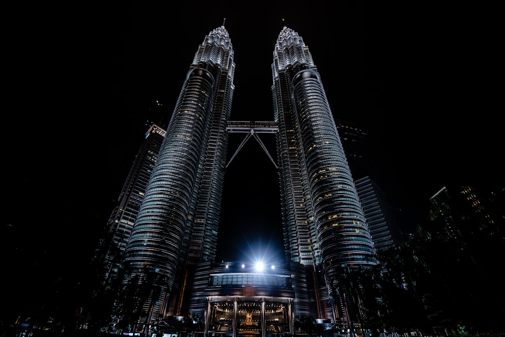
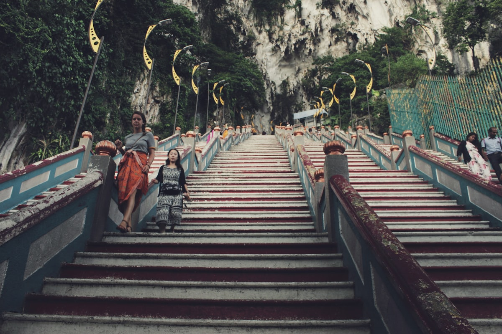
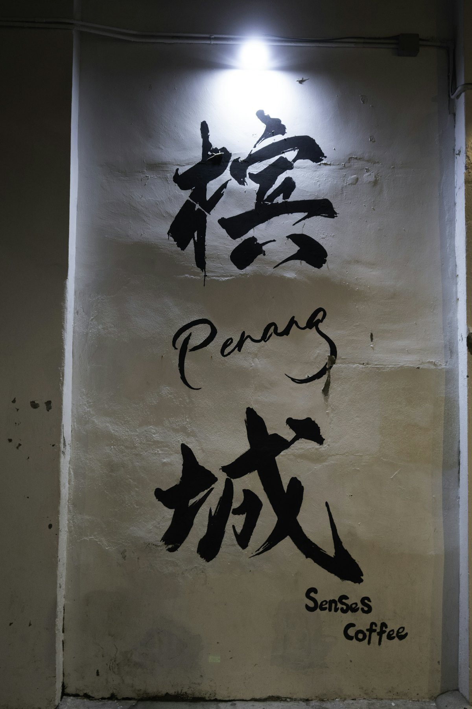
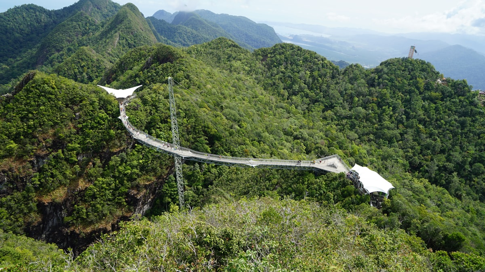
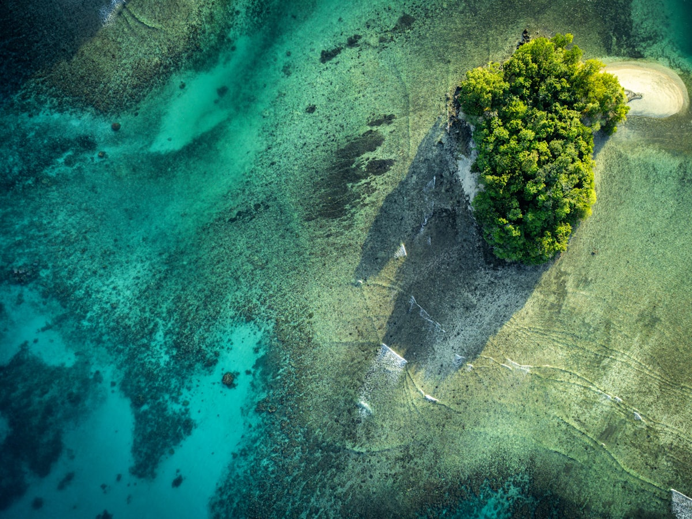
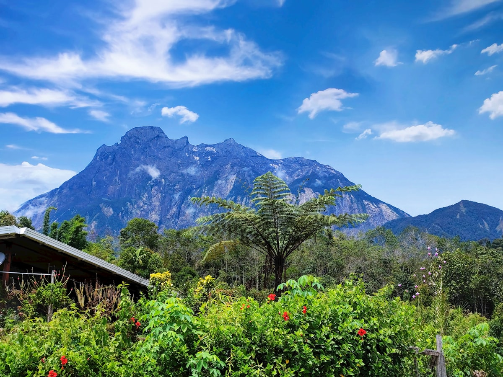
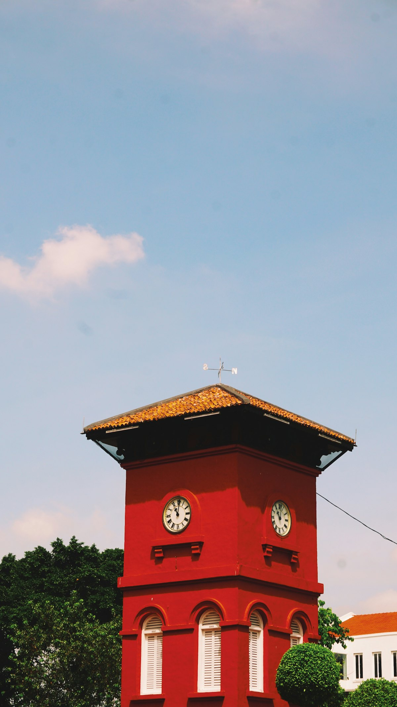
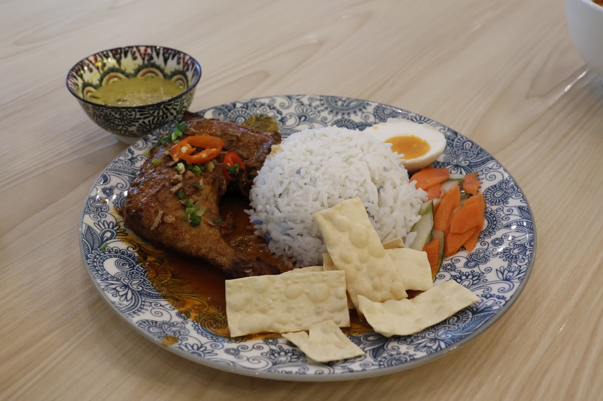

| 事项 | 结论 |
|---|---|
| 事项 | 结论 |
| 签证（最关键） | 中马互免签证协定于 2025-07-17 生效：持中国普通护照免签入境，单次停留不超 30 天（180 天内累计不超 90 天），15 天行程无忧。入境前 3 天须在马移民局官网填报马来西亚电子入境卡 MDAC |
| 时差 | 马来西亚与北京无时差（同为 UTC+8），落地直接开玩 |
| 电源插座 | 240V，G 型英标三扁脚插座，需带转换插头，无需变压 |
| 货币 | 马来西亚林吉特（RM），1 RM ≈ 1.6 元人民币；机场汇率差，市区 ATM 取现最划算 |
| 推荐方案 | 吉隆坡 4 天（含黑风洞/云顶）+ 槟城 3 天 + 兰卡威 3 天 + 沙巴亚庇 4 天 + 返程 |
| 返程约束 | 亚庇直飞北京航班较少，多为经吉隆坡转机，返程留足转机时间 |
| 预算（人均） | 经济 8000–12000 ／ 标准 15000–22000 ／ 舒适 28000–42000（人民币） |
| 三件提前事 | ① 订吉隆坡—槟城、兰卡威—亚庇国内机票 ② 双子塔观景台官网预约时段 ③ 订环滩岛/美人鱼岛浮潜一日游 |
以下为 15 天 14 晚的推荐节奏：西马都市与海岛打头，再飞东马沙巴收尾。每日主景点 ≤2 个，交通以飞机 + 短途巴士 + 快艇为主。
| 日期 | 行程 | 过夜地 | 主题 |
|---|---|---|---|
| D1 抵吉隆坡 | 北京✈吉隆坡（约 6.5h），入住 KLCC/武吉免登，傍晚阿罗街夜市+双子塔夜景 | 吉隆坡 | 抵达+预热 |
| D2 | 独立广场+苏丹阿都沙末大厦 → 国家清真寺 → 茨厂街午餐 → 双子塔观景台（预约） | 吉隆坡 | 都市核心 |
| D3 | 黑风洞彩虹阶梯 → 云顶高原 或 马六甲一日（荷兰红屋/圣保罗教堂） | 吉隆坡 | 郊外一日 |
| D4 | 吉隆坡✈槟城（约 1h），乔治市壁画街 → 姓氏桥夕阳 | 槟城 | 飞槟城 |
| D5 | 升旗山缆车俯瞰全城 → 极乐寺 → 巴都丁宜海滩 | 槟城 | 升旗山日 |
| D6 | 娘惹博物馆/张弼士故居 → 圣乔治教堂 → 康华利斯堡 → 新关仔角夜市 | 槟城 | 古城深度 |
| D7 | 槟城✈兰卡威（约 40min），珍南海滩 → 巨鹰广场日落 | 兰卡威 | 飞海岛 |
| D8 | 天空缆车+天空之桥 → 红树林游船 或 七仙井瀑布 | 兰卡威 | 天空桥日 |
| D9 | 兰卡威跳岛游：孕妇岛 → 湿米岛 → 狮子岛喂鹰，珍南海滩日落 | 兰卡威 | 跳岛日 |
| D10 | 兰卡威✈吉隆坡转机✈亚庇，傍晚丹绒亚路日落 | 沙巴亚庇 | 飞东马 |
| D11 | 环滩岛浮潜一日：白沙滩+两次浮潜+岛上午餐 | 沙巴亚庇 | 环滩岛日 |
| D12 | 美人鱼岛浮潜一日：双浮潜点+BBQ 午餐（或换近岛跳岛） | 沙巴亚庇 | 美人鱼岛日 |
| D13 | 神山一日：那巴鲁市场 → 波令温泉+树顶吊桥 → 京那巴鲁公园 | 沙巴亚庇 | 神山日 |
| D14 | 加雅街周日市集（若周日）→ 亚庇市区 → 机动日缓冲 | 沙巴亚庇 | 机动日 |
| D15 返程 | 亚庇✈北京（直飞约 5.5h）或经吉隆坡转机，入境到家 | — | 收尾 |
以下为 15 天全程的逐小时执行时间线，可当作「当天打开照着走」的清单。标注 ※ 的可选项视体力与天气取舍。
| 时间 | 事项 |
|---|---|
| 09:30–16:30 | 北京✈吉隆坡（直飞约 6.5h，国航 CA871 或马航 MH319，无时差）。落地前 3 天已在官网填好 MDAC 电子入境卡 |
| 16:30–18:00 | 机场买电话卡（Celcom/Digi 约 30–50 RM 含流量）、ATM 取少量林吉特，乘机场快线 KLIA Ekspres（约 55 RM，28min）进市区 |
| 18:30–20:00 | 入住 KLCC/武吉免登酒店（地铁沿线最方便），换夏装 |
| 20:00–22:00 | 晚餐：阿罗街夜市（烤鱼、沙爹、猫山王榴莲），饭后看双子塔夜景与 KLCC 公园音乐喷泉 |
| 时间 | 事项 |
|---|---|
| 08:30–10:30 | 独立广场 + 苏丹阿都沙末大厦（免费）：1957 年马来西亚独立宣言所在地，英式殖民建筑群与 95 米旗杆 |
| 10:30–12:00 | 国家清真寺（免费，着装遮肩遮膝）：现代伊斯兰建筑的 73 米宣礼塔，女性需披长袍 |
| 12:00–13:30 | 午餐：茨厂街（唐人街）海南鸡饭、肉骨茶、罗汉果龙眼水 |
| 14:00–16:30 | 双子塔观景台（外国成人 98 RM，须官网预约）：41–42 层天桥 + 86 层观景台俯瞰全城 |
| 17:30–20:30 | KLCC 公园（免费）：湖面倒影机位、音乐喷泉；晚餐武吉免登商场或阿罗街补一顿 |
| 时间 | 事项 |
|---|---|
| 08:00 | 乘 KTM 火车或 Grab 到黑风洞（距市区约 13km，40min） |
| 09:00–11:00 | 黑风洞（免费）：272 级彩虹阶梯 + 43 米巨型神像 + 天然溶洞，注意猴子会抢东西 |
| 11:30–17:00 | 云顶高原（免费入场）：黑风洞旁缆车上山约 1h，室内主题乐园、高原名牌折扣村、山顶观景台 |
| 备选 | 若选马六甲一日：早起乘巴士 2h，荷兰红屋、圣保罗教堂、鸡场街夜市、马六甲河游船 |
| 19:00 | 返回吉隆坡晚餐，为次日飞槟城早休息 |
| 时间 | 事项 |
|---|---|
| 08:00–10:00 | 退房，乘机场快线到 KLIA（注意看清是 KLIA 还是亚航专用的 KLIA2），吉隆坡✈槟城（约 1h，提前订约 150–350 元） |
| 11:30–13:00 | 入住乔治市酒店，午餐：福建虾面/咖喱面 |
| 14:00–16:30 | 乔治市壁画街（免费）：立陶宛画家尔纳斯的《姐弟共骑》等街头壁画散落老街，租自行车或 Grab 打卡 |
| 16:30–18:00 | 姓氏桥（免费）：姓周桥海上高脚屋，夕阳时分最出片 |
| 18:30–21:00 | 晚餐：汕头街夜市（炒粿条、粿条汤、蚝煎） |
| 时间 | 事项 |
|---|---|
| 08:00 | 乘 204 巴士（约 2 RM）或 Grab 到升旗山脚下 |
| 08:30–11:30 | 升旗山缆车（外国成人往返普通票 40 RM）：世界最陡缆车之一，山顶俯瞰乔治市与槟威大桥，可加逛 The Habitat 生态公园 |
| 12:00–13:30 | 午餐：极乐寺山下素斋或阿依淡市场小吃 |
| 13:30–16:30 | 极乐寺（免费入内）：东南亚最大佛寺之一，万佛塔+观音圣像，索道单程 8 RM，登塔 3 RM |
| 17:00–19:00 | 巴都丁宜海滩（免费）看海，或回乔治市；晚餐新关仔角夜市 |
| 时间 | 事项 |
|---|---|
| 09:00–11:30 | 娘惹博物馆（约 20 RM）或张弼士故居·蓝屋（约 25 RM，按场次参观）：中西合璧的南洋大宅 |
| 11:30–13:00 | 午餐：乔治市老字号（炒粿条、咖喱面） |
| 14:00–16:30 | 圣乔治教堂（免费）+ 康华利斯堡（约 20 RM）+ 小印度街区 |
| 16:30–18:30 | 光大商场/百丽宫购物，或租车环岛看海景 |
| 19:00–21:00 | 新关仔角夜市（Gurney Drive）：海鲜烧烤、啰惹 Rojak、叻沙 |
| 时间 | 事项 |
|---|---|
| 08:30–10:40 | 退房，打车到槟城机场（约 20min），槟城✈兰卡威（约 40min，飞萤/亚航，提前订约 100–250 元） |
| 11:30–13:00 | 入住珍南海滩酒店，午餐：海鲜炒饭/沙爹 |
| 14:00–16:00 | 珍南海滩（免费）：白沙滩、水上摩托、拖伞，兰卡威最热闹的海滩 |
| 16:30–18:00 | 巨鹰广场（免费）：兰卡威地标巨型老鹰雕像，瓜镇海边看日落 |
| 18:30 | 晚餐：瓜镇夜市或珍南海鲜，免税店补货烟酒巧克力 |
| 时间 | 事项 |
|---|---|
| 08:30 | 从珍南海滩租车/Grab 到东方村（约 20min） |
| 09:00–12:00 | 天空缆车 + 天空之桥（外国成人套票约 89 RM）：登上海拔 660 米的弧形吊桥，晴天可远眺安达曼海与泰国海岸 |
| 12:00–13:30 | 东方村午餐，可选 SkyRex/SkyDome 小剧场 |
| 14:00–16:30 | 红树林游船（约 150–250 RM/人）看鹰与石灰岩，或七仙井瀑布（免费）野泳 |
| 17:30–19:00 | 珍南海滩日落，晚餐海鲜烧烤 |
| 时间 | 事项 |
|---|---|
| 08:30 | 瓜镇码头集合（跳岛拼船约 50–100 RM/人，酒店前台或码头可订） |
| 09:00–12:00 | 跳岛游：孕妇岛（淡水湖）、湿米岛白沙滩、狮子岛海上喂鹰 |
| 12:30–14:00 | 岛上午餐或回珍南海滩午餐 |
| 14:30–17:00 | 海滩休闲，或租车自驾西海岸看稻田与海滩 |
| 18:00–20:00 | 珍南海滩日落 + 告别海鲜晚餐 |
| 时间 | 事项 |
|---|---|
| 08:30 | 退房去兰卡威机场 |
| 10:00–15:00 | 兰卡威✈吉隆坡（约 1h）转机✈亚庇（约 2.5h），全天以转场为主，中转留 2h+ |
| 15:30–16:30 | 入住亚庇市区酒店（加雅街附近，码头机场都方便） |
| 16:30–18:30 | 丹绒亚路海滩（免费）：世界最美日落之一，沙滩小摊买椰子与烤串 |
| 19:00 | 晚餐：亚庇海鲜市场/加雅街生肉面 |
| 时间 | 事项 |
|---|---|
| 07:00–09:30 | 酒店出发到码头（约 15min），一日游约 ¥450–600 含接送午餐浮潜（Klook 约 ¥508）；快艇到环滩岛（约 75min，风浪大易晕船） |
| 09:30–12:00 | 环滩岛：白沙滩 + 两次浮潜（看珊瑚与热带鱼，运气好遇海龟） |
| 12:00–13:30 | 岛上自助午餐 |
| 13:30–15:00 | 自由活动：沙滩躺平、玻璃底船、拍照 |
| 15:30–17:00 | 返程回亚庇，晚餐海鲜 |
| 时间 | 事项 |
|---|---|
| 07:00–09:30 | 酒店出发，美人鱼岛一日游约 ¥330–600（Klook 约 ¥508，含接送午餐）；快艇到美人鱼岛 Mantanani（约 1.5h） |
| 09:30–12:00 | 美人鱼岛：两个浮潜点 + 白沙滩，水清见底 |
| 12:00–13:30 | 岛上 BBQ 午餐 |
| 13:30–15:30 | 自由活动/深潜体验（可选，约 ¥300–500） |
| 15:30–17:30 | 返程，晚餐：加雅街海鲜 |
| 时间 | 事项 |
|---|---|
| 07:30–09:00 | 酒店出发（一日游约 ¥360–600 含接送午餐门票，全程约 10h），抵达那巴鲁 Nabalu 手工艺品市场，观景台远眺神山 |
| 10:30–12:30 | 波令温泉 + 树顶吊桥（离地 41 米、长 157 米的悬空吊桥） |
| 12:30–14:00 | 午餐（神山烤山猪肉自费，值得一试） |
| 14:30–16:00 | 京那巴鲁国家公园（世界自然遗产）：高原植物园与神山观景 |
| 16:00–18:00 | 返亚庇市区（车程约 2h），晚餐自由安排 |
| 时间 | 事项 |
|---|---|
| 08:00–11:00 | 加雅街周日市集（若逢周日）：手工艺品、水果、地道小吃一条街 |
| 11:00–13:00 | 亚庇市区：艾京生钟楼、哲斯顿港码头、沙巴州立清真寺外观 |
| 13:30–16:30 | 机动二选一：沙比岛/马努干岛半日跳岛（船程 20min）或市区商场购物补货 |
| 17:00–18:30 | 再拍一次丹绒亚路日落（换个角度） |
| 19:00 | 告别海鲜晚餐，整理行李 |
| 时间 | 事项 |
|---|---|
| 08:00–09:30 | 退房，乘 Grab 到亚庇机场，值机托运 |
| 09:30–10:30 | 亚庇机场免税店最后补购白咖啡、拉茶、巧克力 |
| 10:30–16:00 | 亚庇✈北京直飞（约 5.5h，亚航有直飞）或亚庇✈吉隆坡（2.5h）转机✈北京（6.5h），机上休息 |
| 20:00 | 入境到家，15 天行程结束 |
必去（必去）/ 顺路（顺路）/ 可跳过（可跳过）。

必去
必去
必去
必去
必去
顺路
必去图片为 Unsplash 主题图（双子塔、黑风洞、乔治市壁画、天空之桥、美人鱼岛、神山、马六甲、椰浆饭等均为马来西亚实景），用于页面配图。更多免费景点：独立广场、国家清真寺、KLCC 公园、姓氏桥、珍南海滩、丹绒亚路海滩。
点击左侧节点可在地图上定位；点击地图 marker 会高亮对应节点。坐标为 WGS-84 转 GCJ-02 纠偏后标注。
以下为单人、不含购物的估算，人民币计价；出发地基准北京。汇率按 1 林吉特 ≈ 1.6 元人民币估算。往返机票按淡季直飞 2500–4000 元计，旺季（11 月–次年 2 月）上浮。
| 项目 | 经济（8000–12000） | 标准（15000–22000） | 舒适（28000–42000） |
|---|---|---|---|
| 往返机票 | 北京⇄吉隆坡 2500–3200 | 直飞往返 3200–4500 | 直飞+段升舱 6000–9000 |
| 住宿（14 晚） | 青旅/民宿 150–300/晚 | 三星酒店 300–600/晚 | 度假村/海景房 800–1800/晚 |
| 境内交通 | 三段机票+巴士 1000–1500 | 机票+船+包车 2000–3000 | 全段机票+包车 4500–7000 |
| 门票与活动 | 基础景点 500–800 | 含两海岛一日游/神山 1500–2500 | 全含+深潜+包船 4000–6000 |
| 餐饮（15 天） | 夜市+大排档 1800–2500 | 正常下馆子 3000–4500 | 海鲜大餐+高档餐厅 6500–10000 |
带娃推荐：砍掉神山（车程 5h 太长），海岛换沙比岛/马努干岛近岛跳岛（船程 20min、浪小），兰卡威跳岛选半日版；加云顶室内主题乐园与吉隆坡水族馆。孩子浮潜需全程陪护，快艇大船比快艇更稳。景点方面 12 岁以下多为半价或免费。
沙巴段从亚庇加飞斗湖（约 45min），去仙本那打卡卡帕莱/马布岛水上屋（3 天 2 晚约 2500–4000 元/人含食宿潜水），再顺访马布岛与诗巴丹（世界级潜水点）。此方案需把行程延长到 18–20 天，或在西马砍掉马六甲与云顶。
| 方式 | 时长 | 参考价 | 备注 |
|---|---|---|---|
| 直飞（推荐） | 北京→吉隆坡约 6.5h | 往返 2500–4000 元 | 国航 CA871（首都）/马航 MH319、东航 MU795（大兴） |
| 转机 | 8–12h | 1800–2800 元 | 经广州/深圳/香港，便宜但费时 |
| 亚庇直飞 | 北京→亚庇约 5.5h | 往返 2500–4500 元 | 亚航有直飞，航班较少 |
| 区域 | 价格/晚 | 优点 | 短板 |
|---|---|---|---|
| 吉隆坡·KLCC/武吉免登 | 经济 150–300 / 标准 300–600 | 地铁+购物+夜景核心 | 旺季贵，周末人多 |
| 吉隆坡·茨厂街 | 经济 100–250 | 唐人街美食烟火气 | 老楼设施一般 |
| 槟城·乔治市 | 经济 150–300 / 标准 350–700 | 世界遗产老城，美食步行可达 | 老宅隔音一般 |
| 兰卡威·珍南海滩 | 经济 200–400 / 标准 400–900 | 海滩度假+日落+免税 | 离瓜镇码头较远 |
| 兰卡威·瓜镇 | 经济 150–300 | 免税店近，跳岛方便 | 海滩资源弱 |
| 亚庇·加雅街/市区 | 经济 150–300 / 标准 350–700 | 码头/机场方便，周日市集 | 城市景观一般 |